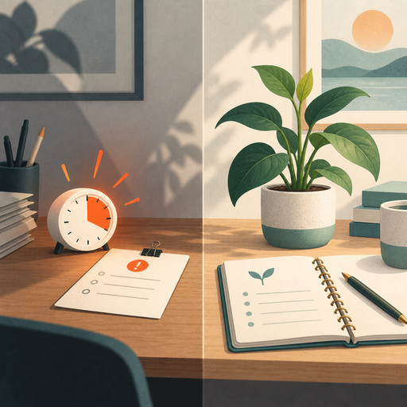

Immediate attention
Urgent work is connected to a clear timeline and pressure to respond.
Urgent and important describe different reasons a task deserves attention.

Image slotWhen considering a task, ask whether it requires immediate attention or helps you achieve long-term goals.
Urgent tasks require immediate attention and must be done now.
Requires immediate attention. It must be done now and has clear consequences if it is not completed within a certain timeline. It is a task you can’t avoid.
Urgent work is connected to a clear timeline and pressure to respond.
Delaying the task can create consequences within the relevant timeline.
Important tasks help you achieve long-term goals. Flip each card to explore what makes work important.
Does not require immediate attention but helps you achieve long-term goals. It contributes significantly to your success, growth, or well-being and focuses on prevention, improvement, or long-term planning.
Urgency and importance give you a framework for deciding what deserves attention. The next lessons turn that framework into practical tools.
Build a manageable daily or weekly task list with one big task, three medium tasks, and five small tasks.
Decide what to do, schedule, delegate, or eliminate by considering urgency and importance together.
Focus on the vital few activities that are most likely to create the greatest results.